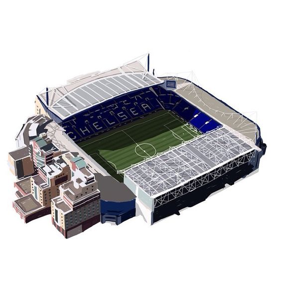

La Premier League es considerada una de las cinco grandes ligas europeas junto con la Primera División española, la Serie A italiana, la Bundesliga alemana y la Ligue 1 francesa, ocupando el primer puesto del coeficiente UEFA. Según la Federación Internacional de Historia y Estadística de Fútbol (IFFHS), es la «liga más relevante del mundo».


El Stamford Bridge es un estadio de fútbol en el distrito de Hammersmith y Fulham, en Londres, Inglaterra, el mismo fue inaugurado el 28 de abril de 1877 y es el hogar del Chelsea Football Club. El estadio se encuentra ubicado en el área urbana de Walham Green y es apodado como The Bridge por los seguidores del club. Su capacidad es de 41.837 aficionados.
